01
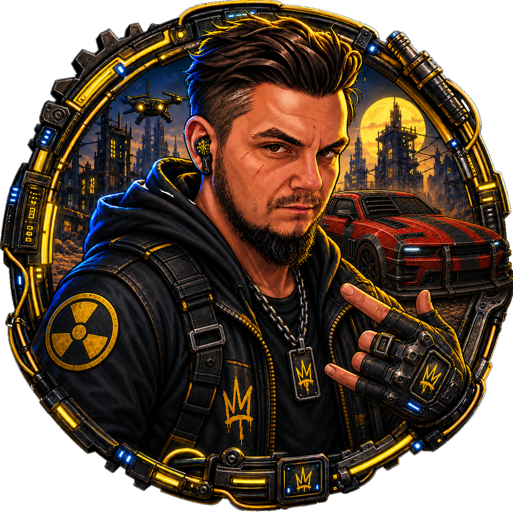
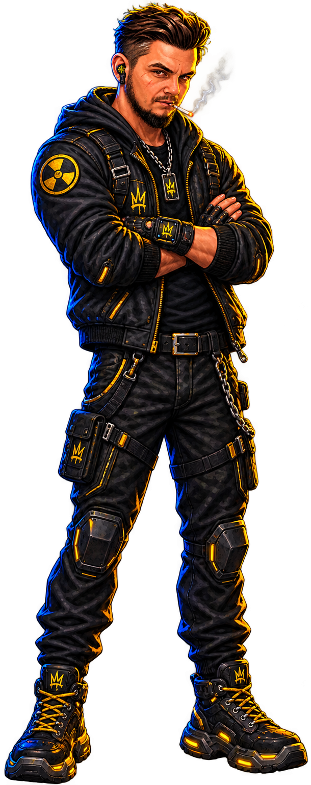
Медведь
Военный гонщик и последний свидетель «Ночи зубов». Молчит, потому что считает молчание защитой.
НЕЙРОСЕТЬ · ЛОВУШКИСмертельные гонки в Чёрном Поясе. Четыре героя, одна военная бойня и арена, которая учится заставлять людей предавать друг друга.
Игрок не смотрит историю о гонщиках — он зарабатывает её победами, рискует деньгами, выбирает маршрут и лично доводит отношения героев до взрыва.
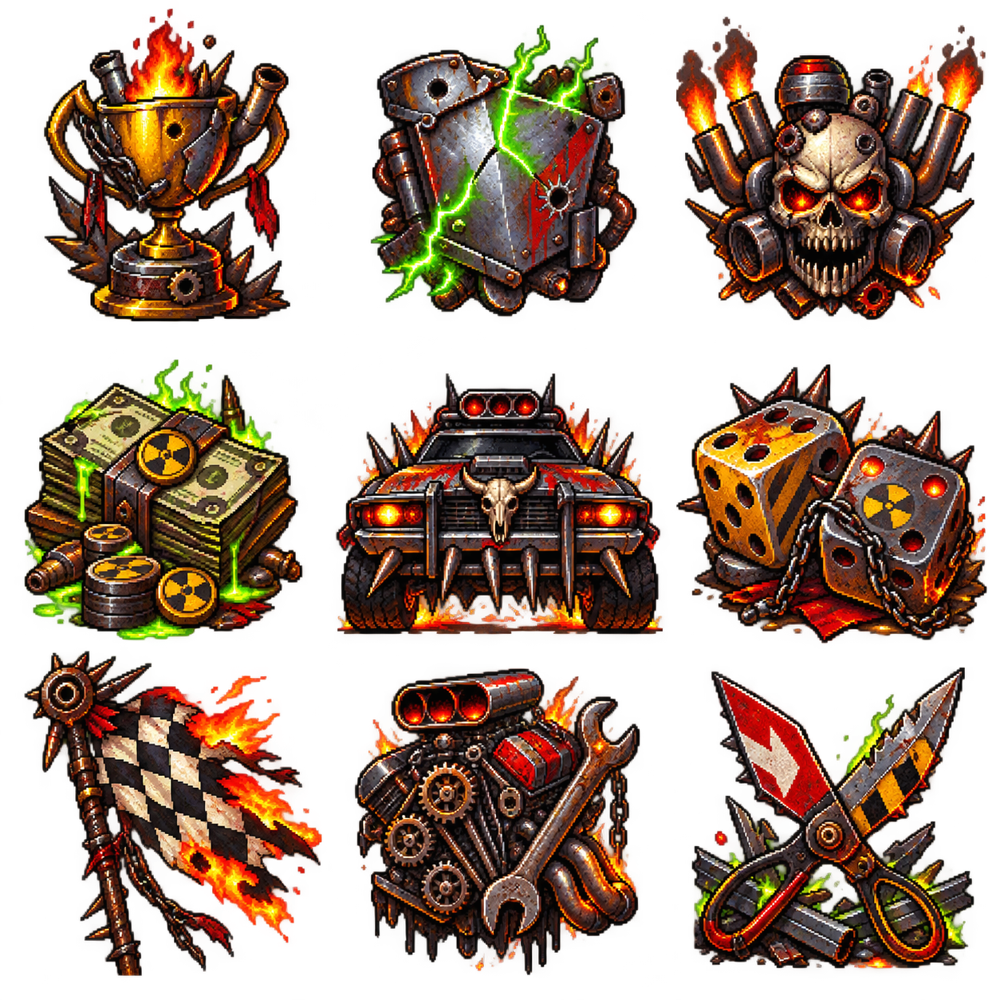


Военный гонщик и последний свидетель «Ночи зубов». Молчит, потому что считает молчание защитой.
НЕЙРОСЕТЬ · ЛОВУШКИ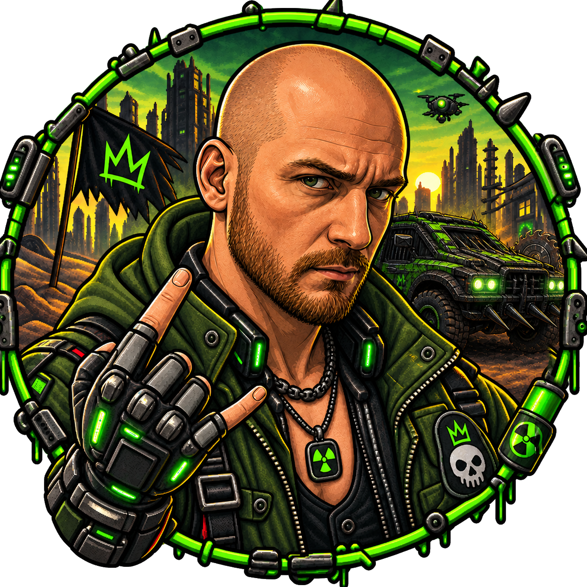
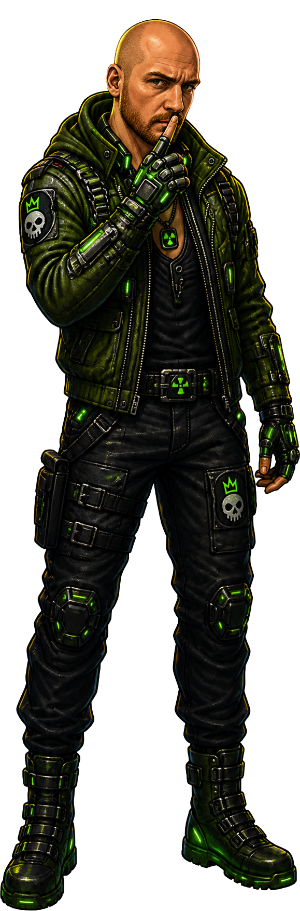
Курьер, который выжил на скорости. Сын Башкира, муж Бегемотика. Броня для него — лишний вес.
РАЗГОН · РИСК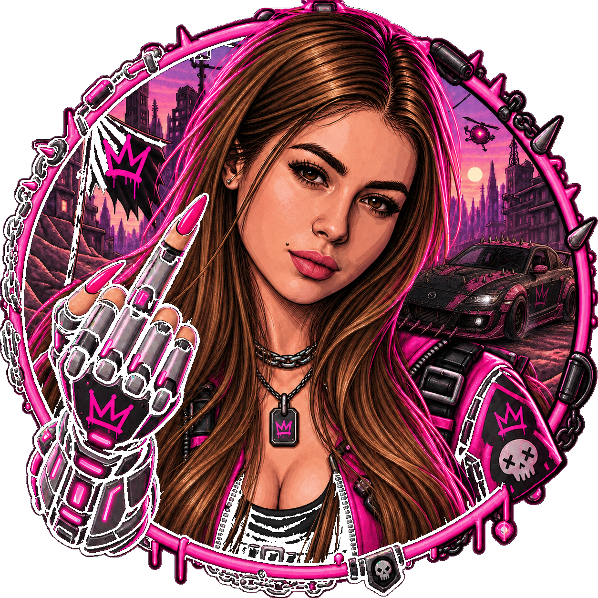
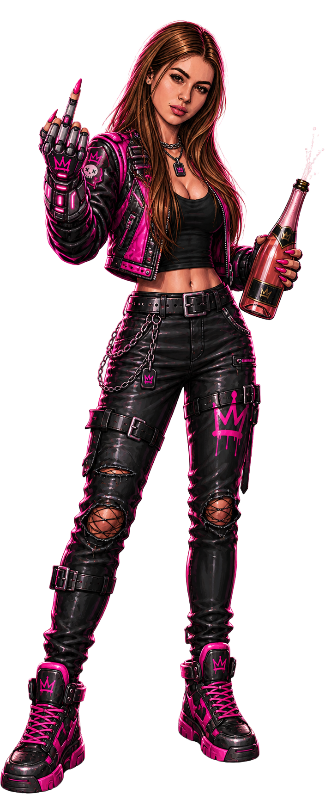
Королева шпильки. Возвращалась в огонь за своими и теперь смеётся, когда страх пытается её догнать.
ДРИФТ · КОНТРАТАКА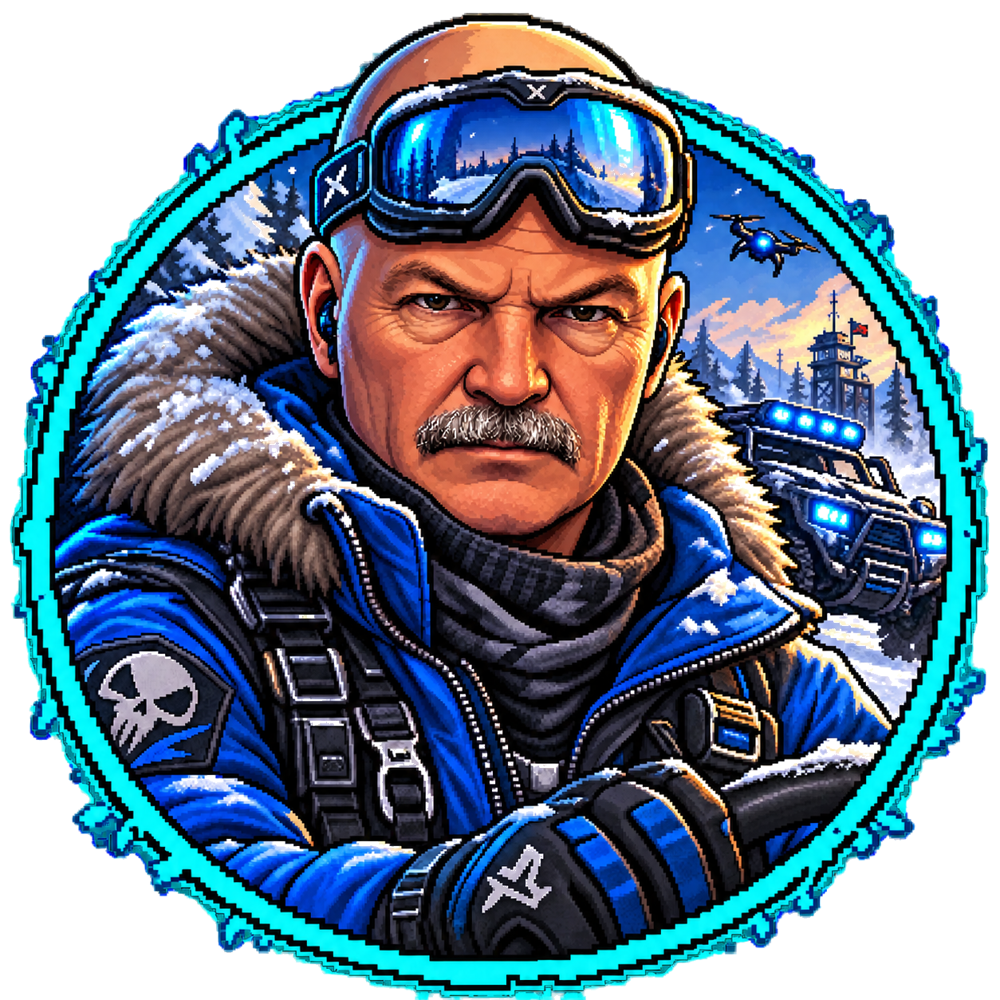
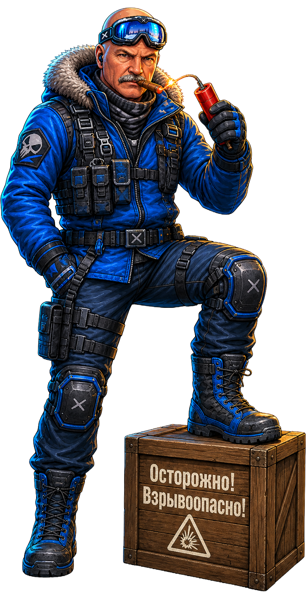
Отец Ерша, друг Медведя. Не гонится за первым местом — первое место само приезжает к его бамперу.
БРОНЯ · ТАРАН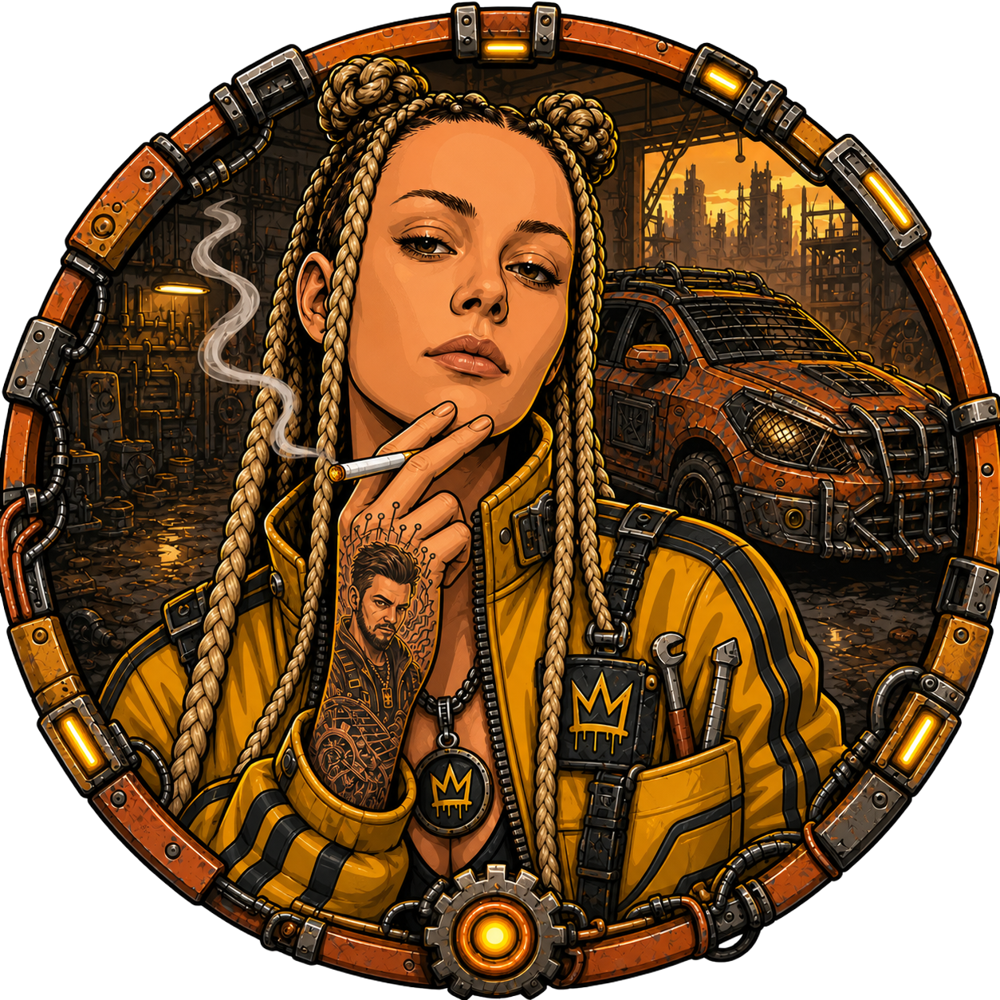
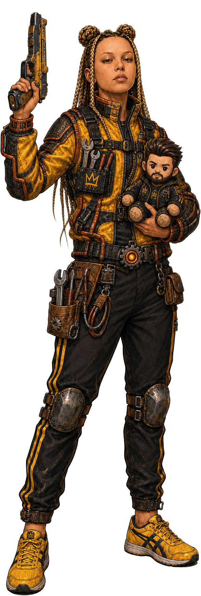
Самостоятельный герой второй кампании. Бывшая любовница Медведя, которая не простит красивую смерть вместо честного разговора.
После ограбления у игрока остаются деньги, телефон, личный предмет и выбор временного кузова. Личная машина не уничтожена и не заменена: она временно недоступна, а её возвращение становится первой личной целью героя.
| Этап | Глава | Фокус | Игровой акцент |
|---|---|---|---|
| ПРОЛОГ | Пустые крепления | Ограбление гаража | Личная машина → временный кузов |
| 01 | Три дня | Возвращение Медведя | Слежка и знакомство |
| 02 | Ночь зубов | Военный флэшбек | Конвой и побег |
| 03 | Последний свидетель | Фото Янот | Поиск в дыму |
| 04 | Год без дома | Новая жизнь | Первые деньги |
| 05 | Грабёж гаража | Бронекузнец | Оборона → погоня → босс |
| 06 | Подъём с нуля | Башкир | Рынок и Борис Бык |
| 07 | Подарок с ценой | Маяки | Доставка и защита |
| 08 | Приглашение на похороны | Янот | Пропуск и парная гонка |
| 09 | Живые на табло | Семья | Не уничтожить своих |
| 10 | То, что скрывал | Признание | Сервисный тоннель |
| 11 | Боссы из прошлого | Пастух / Сестра / Брат | Три уникальные дуэли |
| 12 | Выживет только один | Арена-эксперимент | Сервер и выбор цели |
| 13 | Последний круг | Лаурят | Медведь закрывает Янот Camaro |
| 14–16 | Четверо вместо одного | Выбор выжившего | Скарабей как временный босс |
| 17–18 | Личные ветки | Ерш / Бегемотик / Башкир / Янот | Разные взгляды на правду |
| 19–21 | Чёрный ящик → Свободный панцирь | Сброс ошейника | Открытие Скарабея |
У каждого героя есть личный кузов до первого ограбления. Его нельзя продать или потерять из-за проигрыша. Временная машина поддерживает темп, а личная возвращается через миссии: корпус, ходовая, система.
| Герой | Личная машина | Событие ограбления | Сюжетное возвращение |
|---|---|---|---|
| Медведь01 | «ГРЯЗЕВОЙ ДЬЯВОЛ»Красный Camaro | Бронекузнец увозит корпус и вынимает чёрный ящик | Гл. 5–7: корпус и ручной режим; гл. 13 — щит Янот; гл. 19 — память внутри Скарабея |
| Ерш02 | «КУРЬЕР»Зелёная лёгкая машина | Дирекция изымает кузов после истории с контейнером | Личная ветка: угон из impound-зоны, выбор скорости или брони |
| Бегемотик03 | «ШПИЛЬКА»Розово-чёрная машина | Удалённая блокировка выставляет её на семейную гонку | Снять замок, сохранить шрам и вернуть полный контроль |
| Башкир04 | «УРАЛ»Тяжёлый синий кузов | Враги срезают броню, силовой модуль и ставят маяк | Собрать из военных деталей; выдержать вертолёт за семью |
| Янот06 | «БРИЧКА»Чёрно-графитовый спорткар | В первой кампании спрятана отдельно и не попадает в налёт | Вторая кампания: личный стартовый кузов и память о Camaro |
ASSET CHECK Машины показываются в двух ракурсах: сверху и в полном профиле. Сверено с `car.json`: «Урал» находится в слоте 07, а слот 10 называется «Жеребец».
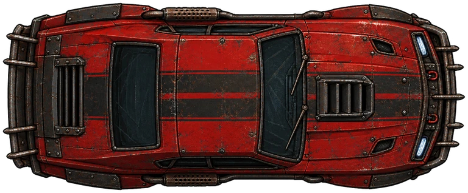
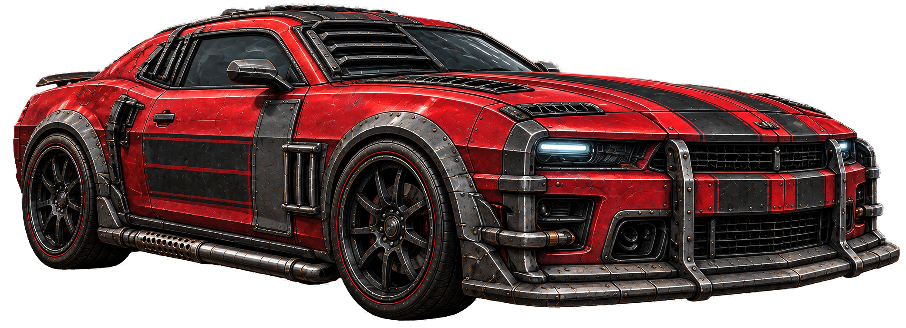
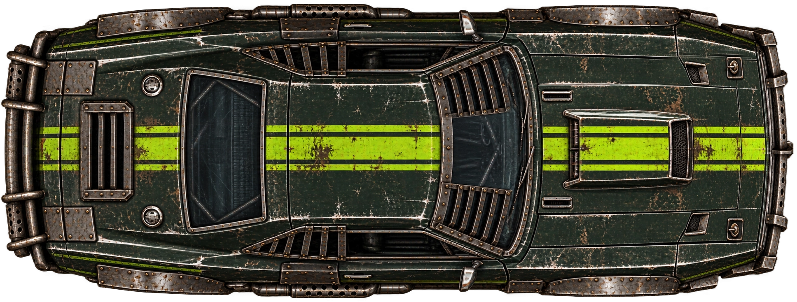
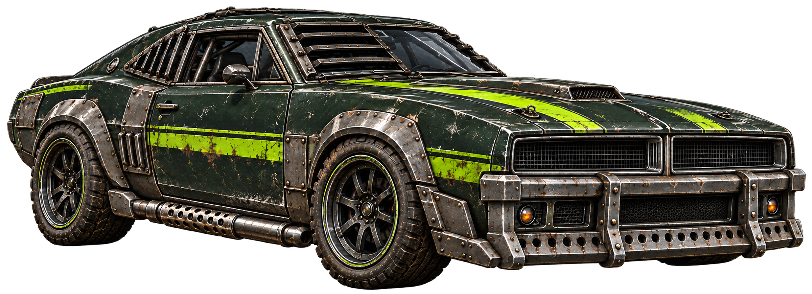
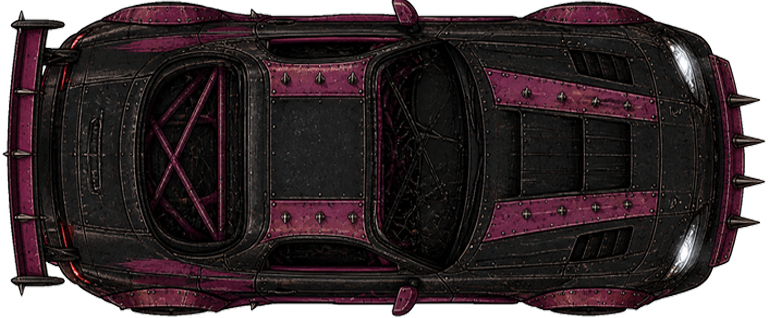
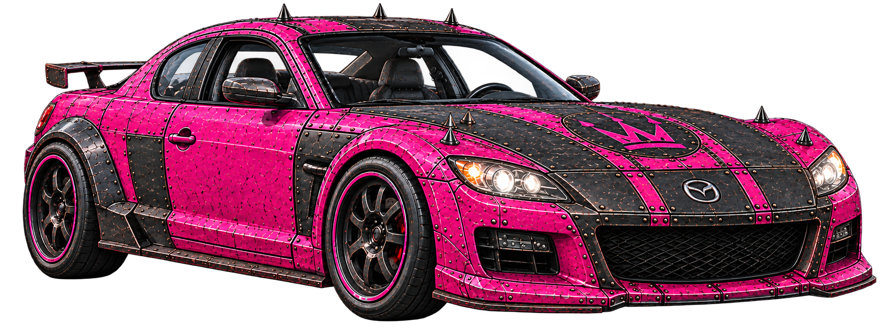
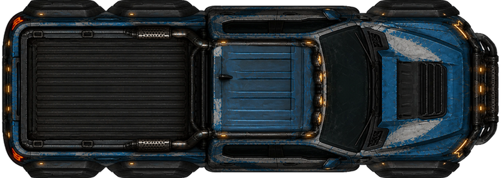
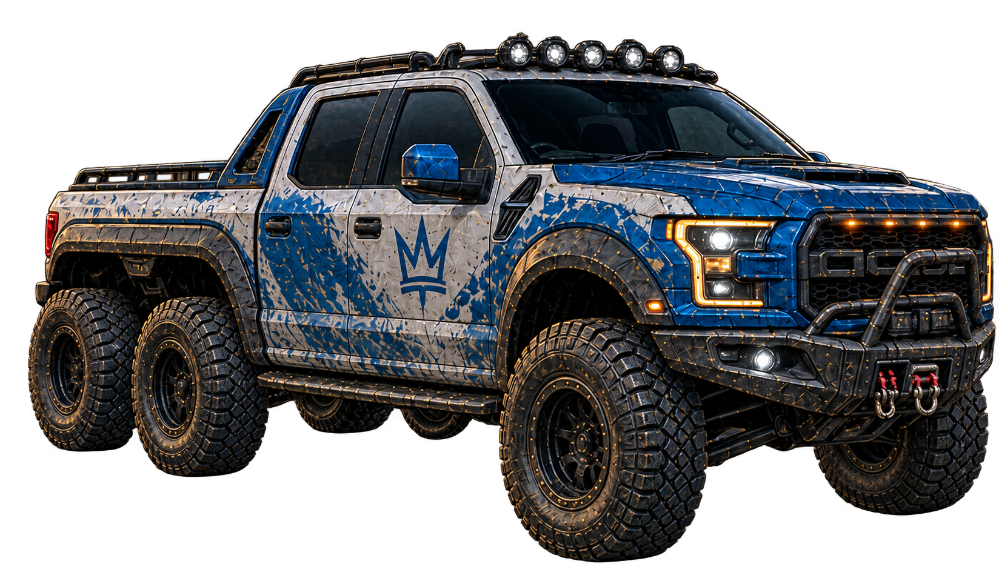
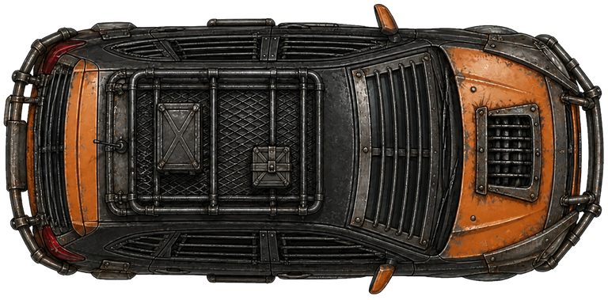
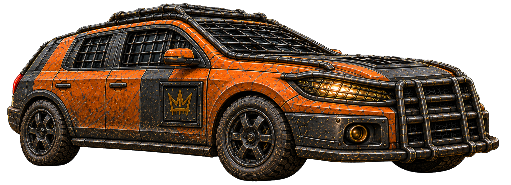
Игрок выбирает дешёвый рабочий автомобиль, пока возвращает свой. Вложения можно снять и перенести. Возвращение личной машины всегда ощущается как награда за действие, а не как подарок из меню.
Финишировать первым или попасть в сектор до закрытия ворот. Иногда важнее доставить улику, чем выиграть.
Держать дистанцию, ломать защиту цели и реагировать на смену маршрута.
Пережить таймер, сбросить маяк, найти выход. Победа — это не всегда первое место.
Прикрыть союзника, гараж или эвакуатор. Башкир делает этот тип личным.
Догнать конвой, забрать груз и не дать Дирекции стереть свидетеля.
Три фазы, отдельное правило арены и личная причина ненавидеть героя.
Вышка → сухой канал → ретрансляторы → тоннель. Вертолёт нельзя просто убить: игрок использует кран, мост, топливный резервуар и тень эстакады.
| Босс | Локация | Главная механика | Смысл |
|---|---|---|---|
| Борис Бык«Лоб в лоб» | Нижний рынок | Силовая дуэль, таран, закрытые короткие пути | Первый капитал |
| Бронекузнец«Обломки» | Старый завод | Броня → ловушки → разваливающаяся быстрая машина | Ограбление гаража |
| Пастух«Голоса в рации» | Разбитая эстакада | Рой дронов и ложные голоса погибших | Доверять не голосу, а фактам |
| Сестра«Правильный порядок» | Узел связи | Меняет ворота и предлагает спасти одного союзника | Контроль как забота |
| Старший брат«Цена жизни» | Подземная арена | Копирует стиль и последний успешный приём игрока | Вина выжившего |
| Лаурят«Ты сам выбрал» | Диспетчерская | Архив, семья, месть и порядок действий | Зеркало Медведя |
| Скарабей«Чужой в панцире» | Арена второй кампании | Тяжёлый панцирь, паттерны Camaro, живой ошейник | Своего нужно сначала победить |
Личная машина не исчезает из канона. Игрок сам решает, вложиться в скорость, ремонт или информацию, пока возвращает свой личный кузов.
| Стадия | Что открывается | Цена решения |
|---|---|---|
| 0 · Пустой бокс | Ремонт, шины, базовый кузов | Каждый серьёзный удар |
| 1 · Укрытие | Детали, улики, союзники | Деньги или внимание Дирекции |
| 2 · Мастерская | Оружие, защита, подготовка к боссам | Выбор специализации |
| 3 · Штаб | Несколько машин, карта влияния | Новый круг истории |
Полные раскадровки, диалоги и промты лежат в исходном файле. Ниже — ключевые постановочные узлы, связанные якорями с кампанией.
ЯНОТ: Сколько тебя не будет?
МЕДВЕДЬ: Три дня.
ЯНОТ: Ты всегда врёшь одинаково. Хоть бы разнообразил.
Кадр: дождь, красный Camaro под лампой, сообщение «Не бери Лаурята в машину», которое Медведь стирает.
МЕДВЕДЬ: Они забрали тебя.
НЕЙРОСЕТЬ: Меня — частично. Тебя — полностью.
МЕДВЕДЬ: Тогда начнём с того, чтобы не умереть дешёвыми.
Кадр: пустые крепления, копоть, повреждённый корпус красного Camaro на платформе эвакуатора и жетон со знаком арены.
БАШКИР: Это я. Папа.
ЕРШ: Папа?.. Ты тоже умер?
БАШКИР: Не дождёшься.
Кадр: четыре машины на стартовой линии, между семейным узнаванием и ракетами арены — одна секунда.
БАШКИР: Ты мог сказать.
МЕДВЕДЬ: Если бы сказал, ты бы поехал один.
БАШКИР: А ты решил, что имеешь право ехать вместо всех?
Кадр: синий Ford 6x6 прижимает Camaro к бетонной стене, затем ключи летят обратно Медведю.
ЛАУРЯТ: Я решил, кто должен жить. Ты просто называл это защитой.
ЯНОТ: Не смей решать за меня.
МЕДВЕДЬ: Я рядом.
Кадр: Camaro бросается поперёк траектории ракеты. Янот у горящих обломков кричит: «Ты опять решил всё один!»
ЕРШ: Он издевается.
ЯНОТ: Нет. Он промахнулся слишком правильно.
СИСТЕМА: Учебная цель: семья.
Кадр: Скарабей ставит мину перед Янот, но взрывает её раньше времени; ошейник разворачивает его против семьи.
БЕГЕМОТИК: У нас нет его руки.
ЯНОТ: У нас есть его привычки.
НЕЙРОСЕТЬ: Цель... отменена.
ЯНОТ: Теперь можешь сам выбрать.
Кадр: на вершине ретрансляционной вышки гаснет искрящийся ошейник, Скарабей впервые остаётся без приказа.
НЕЙРОСЕТЬ: Куда ехать?
БАШКИР: Впервые спрашиваешь.
ЯНОТ: Не называй себя Медведем, если сам не решил.
Кадр: рассвет, четыре машины и Скарабей на окраине Чёрного Пояса. Лаурят остаётся на свободе, но город получает часть архива.
План разработки: один вертикальный срез за Медведя, затем обобщение системы на четыре ветки. Codex отвечает за канон, миссии, диалоги, промты и ревью; Cursor — за небольшие изменения кода и тесты.
| Этап | Что делаем | Готово, если |
|---|---|---|
| 00 · Аудит | Читаем rnr.html, сохранения, гараж, машины, гонки | Есть карта точек интеграции, код не менялся |
| 01 · Состояние | storyCampaign, chapter, mission, personalCarState, flags | Старые и новые сейвы работают |
| 02 · Герой | Четыре героя и их личные машины | Выбор сохраняется, свободный режим не сломан |
| 03 · Vertical slice | Личная машина → ограбление → временный кузов → гараж | Пролог можно пройти, проиграть и повторить |
| 04 · Петля | Задание → гонка → деньги → ремонт → погоня | Игрок понимает цель, награду и цену ошибки |
| 05 · Возврат | Корпус Camaro → ходовая → ручной режим | Личная машина возвращается миссиями |
| 06 · Экшен | Локации, NPC, вертолёт, боссы | Каждый тип задания имеет свою механику |
| 07 · Сцены | Диалоги, кадры, музыка, арт-промты | Катсцену можно пропустить без потери флага |
| 08 · Ветки | Ерш → Бегемотик → Башкир → Янот → Скарабей | Общие системы не продублированы копированием |
| 09 · QA | Сейвы, повтор миссий, консоль, мобильный экран, Pages | Критические ошибки закрыты |
Cursor сначала проводит аудит, затем меняет только согласованный набор файлов. Codex проверяет diff, канон и ручной сценарий. Если меняется сюжет, сначала обновляется полный TXT-документ, затем код.